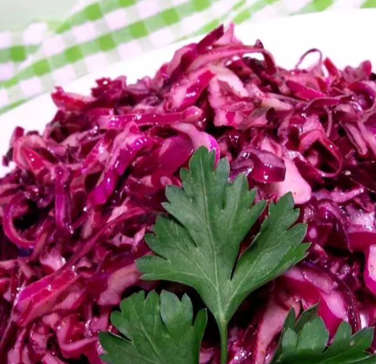

Red Cabbage Salad

A delicious red cabbage salad that I used to get at my grandmother's favorite restaurant. The longer it sits the better it gets.
Ingredients
- ⅔ cup red wine vinegar
- ½ cup canola oil
- 1 tablespoon white sugar
- 1 teaspoon salt
- 1 teaspoon seasoned salt
- ¼ teaspoon ground black pepper
- ¼ teaspoon onion powder
- 1 head red cabbage, cored and shredded
Steps
- Mix red wine vinegar, canola oil, sugar, salt, seasoned salt, pepper, and onion powder in a bowl.
- Place cabbage in a large glass bowl. Pour dressing over cabbage and toss to coat. Cover and refrigerate, 8 hours to overnight, stirring occasionally. Drain before serving.